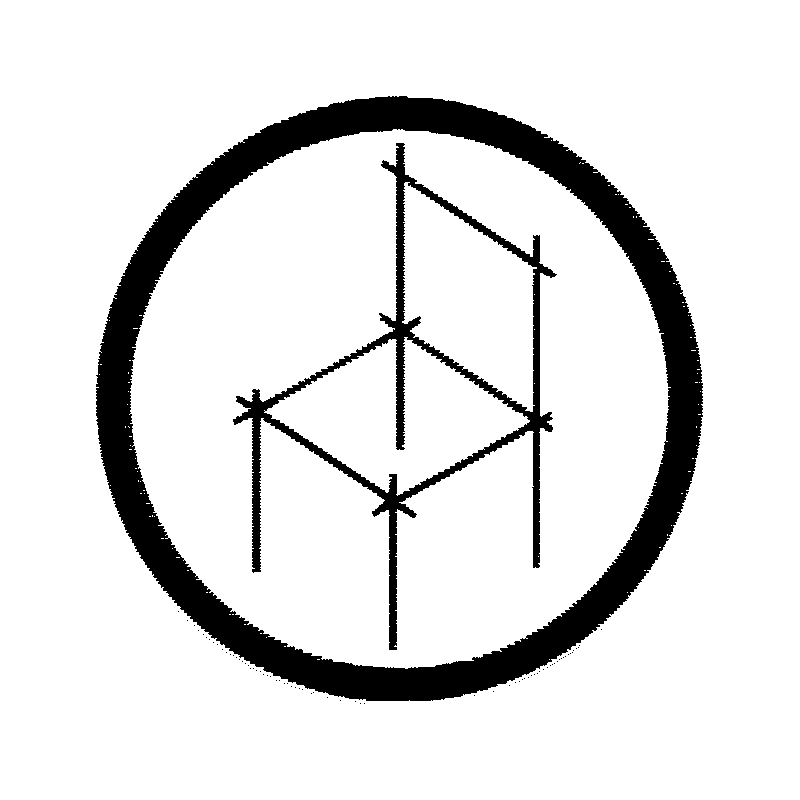
Chair-ness
A chair a week from whatever’s around. Interrogating what “chair” means, one salvaged-material build at a time. With Christopher Attenborough
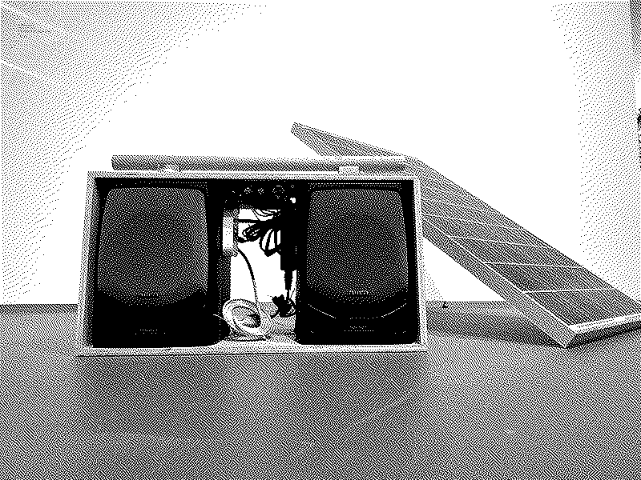
Solarpunk Boombox
DIY boombox from found materials designed to run on solar panel, power drill batteries, or a wall outlet
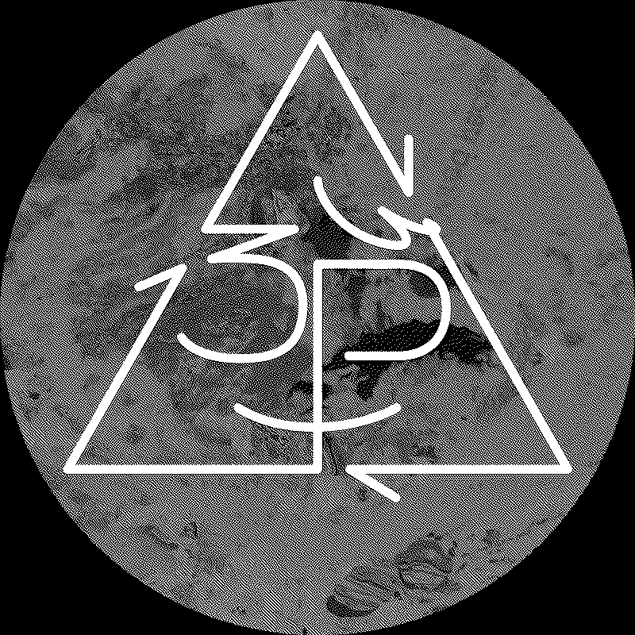
3P: People Processing Plastic
An Experiment in Plastic Reuse and Recycling: Passionate people performing practical plastic processing…
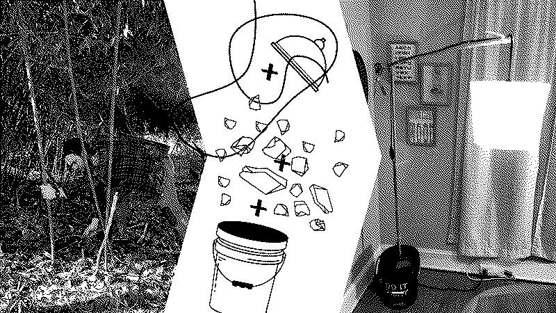
Spontaneous Lamp
Designing with found materials; a lamp that doesn’t exist? Foraged Bamboo, found rocks, unused 5 gallon bucket, clip-on lamp, and extension cord.
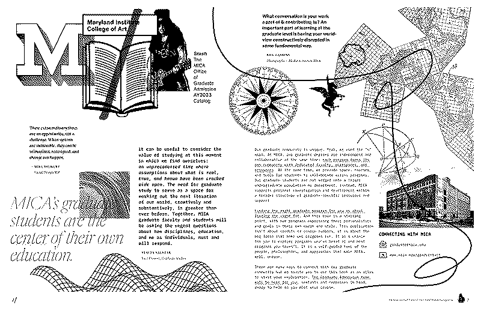
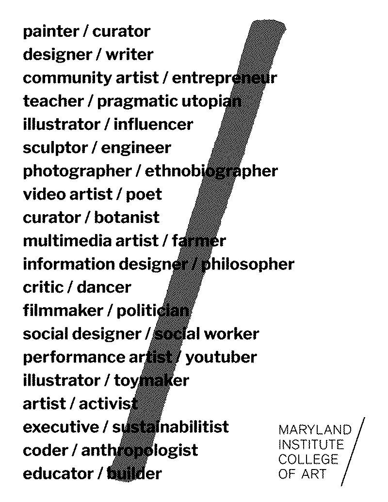
MICA Graduate Admissions Materials
Can institutional admissions materials practice open-source principles and material restraint — and teach the reader something in the process?
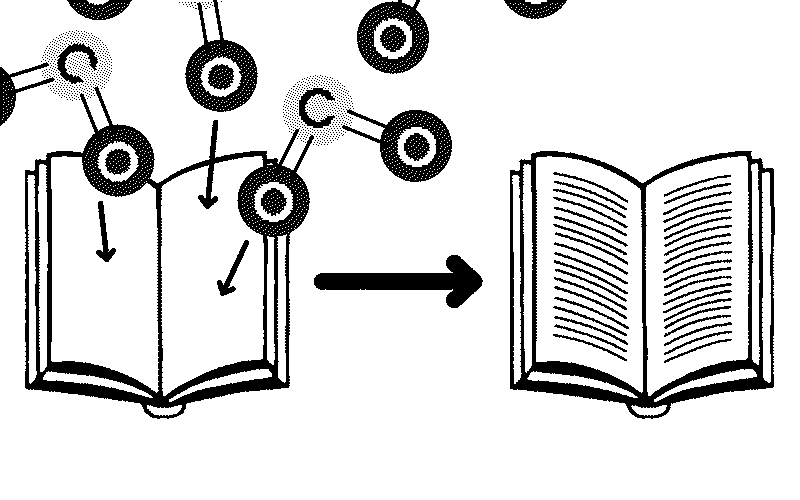
A Carbon Sequestering Book
What if a book could draw down carbon from the air?
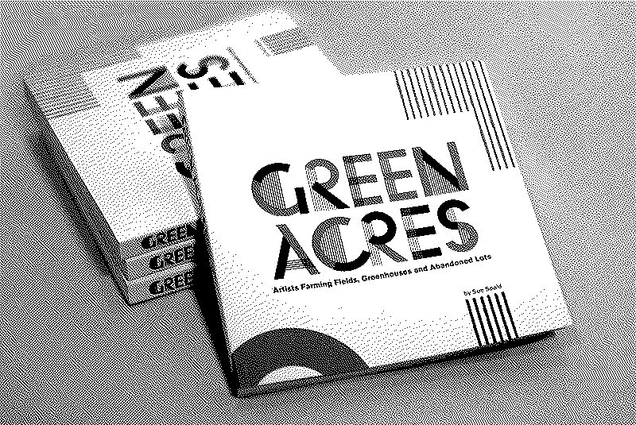
2 Books; 1 Throughline (Green Acres → EcoVention Europe)
Can a book about ecological art practice what it preaches? The first was less bad. The second just tried to be less.
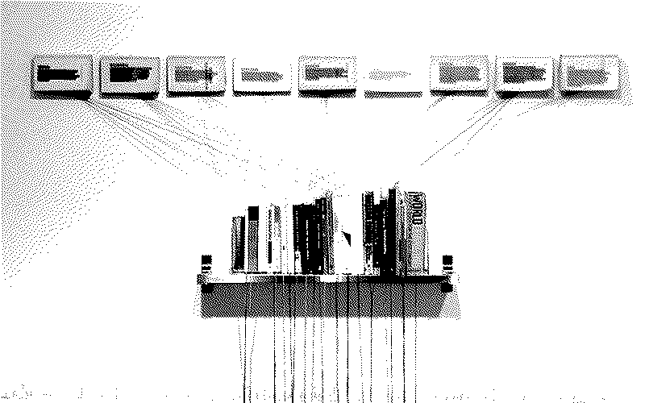
The Sustainabilitist Principles
What ways of thinking lead a designer to sustainable solutions?
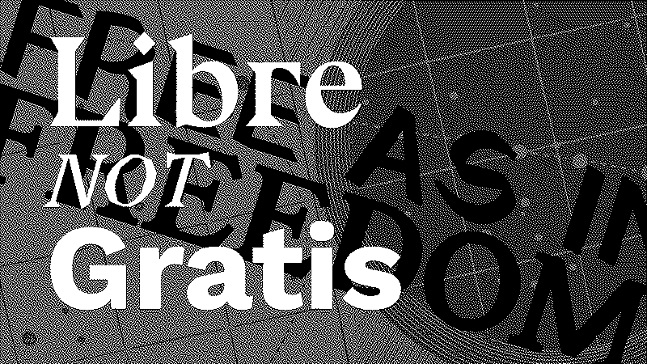
The Libre Designer
A manifesto for the libre designer, and the case for a new design commons.
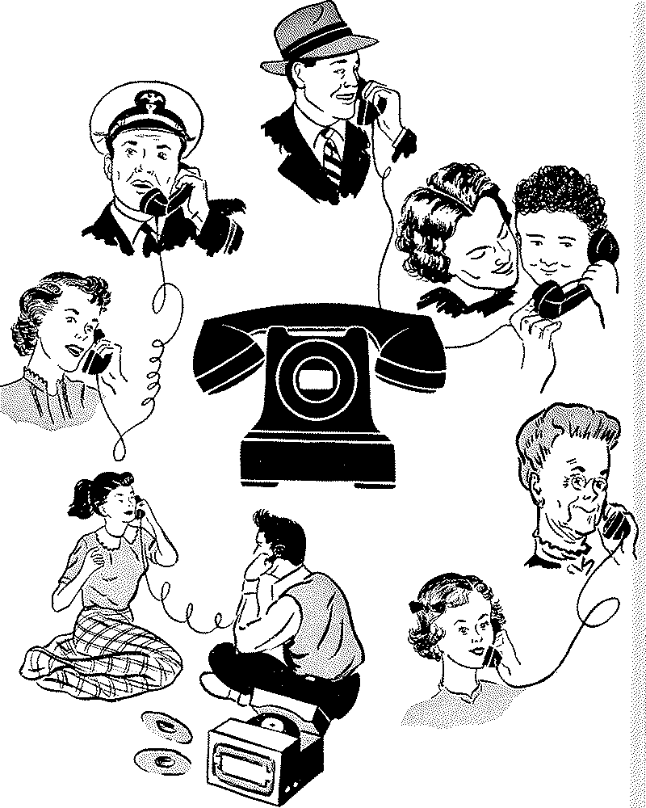
Contact Wjerk
-
Phone: +1 (507) 301-8402
-
Email: bjornmeansbear@pm.me
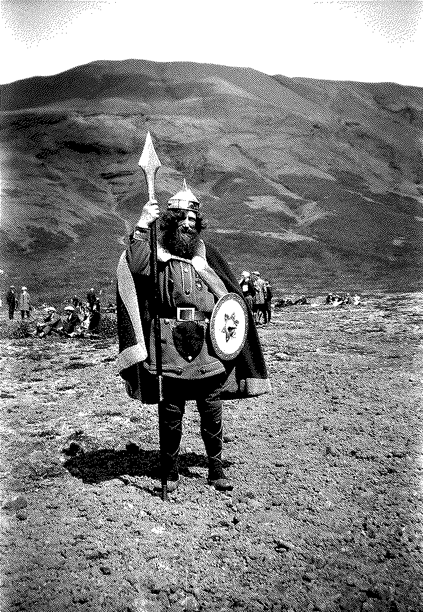
About Kristian
Kristian Bjørnard has spent twenty years asking what design owes the web of life it depends on. His practice weaves circular economies, open-source tools, and design fiction to advance ecological restoration — championing solutions that restore more than they consume, and pointing culture toward a still-hospitable Spaceship Earth.